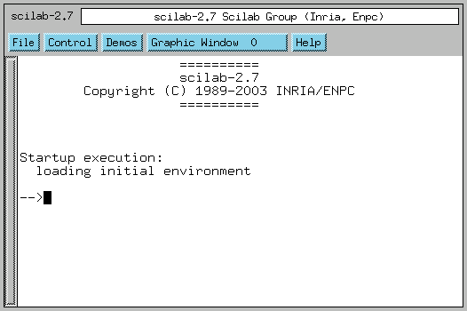
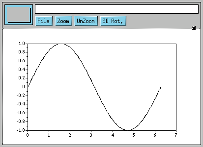
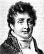
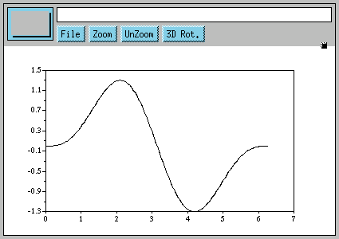
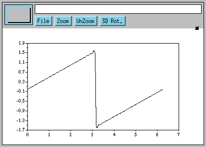
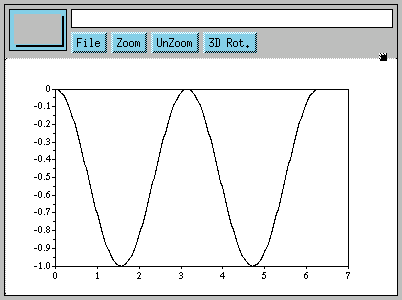
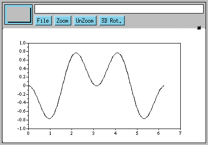

Mathematical Explorations with Scilab/Linux
By Pramode C.E.
Little would Jean Baptiste Joseph Fourier, the 18th century French mathematician and revolutionary, have imagined that the analytical techniques he had invented to study the behaviour of mathematical functions would someday become one of the most powerful tools in the hands of scientists and engineers working in disciplines as diverse as neurophysiology and digital communication.
As I was fast sliding into the depths of mathematical ignorance, I thought maybe I would refresh some high school memories by trying to understand a bit of Fourier's math. Much of what I read flew far above my head - my only consolation was that I discovered Linux to be an ideal platform not only for Operating System hacking but also for mathematical recreation and research.
I came upon a great tool called Scilab and also a nice little tutorial on Fourier Math by Chris Meyers which demonstrated some interesting sine-wave combination/analysis stuff using Python code. This article demonstrates a few simple Scilab tricks and reimplements Chris's code in Scilab's native scripting language. Readers looking for mathematical wisdom are warned not to rely too much on what I say here!
What is Scilab?
Scilab is a powerful, free environment for mathematical computation. It provides an extensible framework for general matrix manipulation and `toolboxes' for doing stuff like control system design, digital signal processing etc. The C/Fortran source code is available for download from the project home page - I had absolutely no difficulty in building the system - the standard `configure; make; make install' magic worked perfectly.
Here is a screen shot of Scilab running on my Linux box:

Simple math
Let's get started by doing a few simple matrix manipulations. A 3-by-3 matrix is created by simply typing, at the Scilab prompt:
-->a = [1,10,20; 5,6,7; 12,11,45] a = ! 1. 10. 20. ! ! 5. 6. 7. ! ! 12. 11. 45. ! -->It's easy to get the transposed matrix:
--->a' ans = ! 1. 5. 12. ! ! 10. 6. 11. ! ! 20. 7. 45. ! -->A few other functions:
-->sum(a, 'c') ans = ! 31. ! ! 18. ! ! 68. ! -->sum(a, 'r') ans = ! 18. 27. 72. ! -->diag(a) ans = ! 1. ! ! 6. ! ! 45. ! -->
Elements can be extracted from matrices in many different ways - the simplest is the standard indexing procedure. Writing a(1,2) would yield the element at row 1 and column 2 (note that the index starts at 1). Indexing a matrix beyond its bound will result in an error. Writing to a non-existent index will result in the matrix growing dynamically.
-->a(3,4) = 3 a = ! 1. 10. 20. 0. ! ! 5. 6. 7. 0. ! ! 12. 11. 45. 3. ! -->
The 'colon' operator
The 'colon' is a cute little operator. We can create a vector of numbers 1,2,3 ... 10 by just writing:
-->a = 1:10 a = ! 1. 2. 3. 4. 5. 6. 7. 8. 9. 10. ! -->Many other tricks are possible:
-->b b = ! 1. 2. 3. ! ! 4. 5. 6. ! ! 7. 8. 9. ! -->b(1:3,2:3) ans = ! 2. 3. ! ! 5. 6. ! ! 8. 9. ! -->1:2:10 ans = ! 1. 3. 5. 7. 9. ! -->
Note that 1:2:10 means create a vector starting from 1, each successive element being computed by adding 2, until the value becomes greater than 10.
Simple plotting
Let's look at an example of a simple sine wave plot. We want one full cycle of the sine curve (from 0 to 2*PI) - let's take 240 points in between, so each division would be 2*PI/240. First we create a vector containing all the angle values in this range and then we plot it (%pi is a constant standing for the value of PI):
--> = 0:(2*%pi)/240:2*%pi
x =
column 1 to 5
! 0. 0.0261799 0.0523599 0.0785398 0.1047198 !
column 6 to 9
! 0.1308997 0.1570796 0.1832596 0.2094395 !
column 10 to 13
! 0.2356194 0.2617994 0.2879793 0.3141593 !
column 14 to 17
! 0.3403392 0.3665191 0.3926991 0.4188790 !
[More (y or n ) ?]
Now, we use a simple plot function:
-->plot(x, sin(x))

Writing Scilab scripts
Writing Scilab scripts is simple. Here is an example of a 'for' loop which can be entered at the Scilab prompt itself:
-->s = 0
s =
0.
-->for i=1:3:10
--> s = s + i
-->end
s =
1.
s =
5.
s =
12.
s =
22.
[More (y or n ) ?]
Defining functions
The function definition syntax is a wee bit tricky. Here is a simple example:
-->function [r] = my_sqr(x)
--> r = x * x
-->endfunction
-->my_sqr(3)
ans =
9.
-->
After the keyword 'function', we supply a list of `output values'. Any value written to an `output' value will be `returned' by the function. The argument 'x' is of course the input argument to the function. The function returns the value 'r' which is the square of 'x'.
The question obviously is what if we want to return two values. We try the following at the Scilab prompt:
-->function [r1, r2] = foo (x, y)
--> r1 = x + y
--> r2 = x - y
-->endfunction
-->[p, q] = foo(10, 20)
q =
- 10.
p =
30.
-->
Note the special way we call the function. The value of r1 will get
transferred to 'p' and value of r2 to 'q'.
The following invocations of 'foo' demonstrates the fact that the language is dynamically typed.
-->[p, q] = foo([1,2], 1) q = ! 0. 1. ! p = ! 2. 3. ! -->[p, q] = foo([1,2], [3,4,5]) !--error 8 inconsistent addition at line 2 of function foo called by : [p, q] = foo([1,2], [3,4,5]) -->
It is possible to store function definitions in a file and load them at a later time. Suppose the above function definition is stored in a file called 'fun.sci'. We need to simply invoke, at the Scilab prompt:
-->exec('fun.sci')
Enter Fourier!

We encounter 'signals' everywhere. The PC speaker generates sound by converting electrical signals to vibrations. We see objects around us because these objects bounce back light signals to our eyes. Our TV and radio receive electromagnetic signals. We are immersed in a 'sea of signals' ! Analysis of signals is therefore of central importance in most branches of science and engineering.
The basic Unix philosophy is `Keep it Simple, stupid'. Physicists (and most other scientists and engineers) often can't stick to this dictum when they start analysing stuff, simply because the phenomena they are studying have awesome complexity. But it seems that most complex things in this world can be explained on the basis of simpler things. Joseph Fourier's insight was that complex time varying signals can be expressed as a combination of simple sin/cos curves of varying frequency and amplitude. We will verify this assumption by plotting a few simple equations with the help of Scilab.
Let's start with a simple sum of two 'sin' signals.
-->delta = (2*%pi)/240
delta =
0.0261799
-->x = 0:delta:2*%pi
-->a = sin(x) - (1/2)*sin(2*x)
-->plot(x, a)
Here is the plot:

There is very little indication here that something interesting is going to happen. Next, we try plotting.
b = sin(x) - (1/2)*sin(2*x) + (1/3)*sin(3*x)We keep on adding terms to the series, the next term would be -(1/4)*sin(4*x), the next one +(1/5)*sin(5*x) and so on. Here is what I got when I plotted this series with 200 terms in it (you will have to write a function to do this for you):

Seems like magic! The sin curve has vanished completely and we have a brand new signal! How exactly Mr.Fourier 'knew' such a series would ultimately give us something totally different from the sum of its parts would be more appropriately dealt with in a mathematics class(Do I hear you yawn? Do we have a case for a more `practical' math education with students being given access to Linux boxes running Scilab, Python(Numeric), and a whole lot of other free, educational tools?)
Determining the components of a signal
We have seen that adding together sines of different frequency and amplitude gives us signals which look totally different. Now the question is, given some numbers which represent a complex waveform, will we be able to say what combination of sine's (frequency and amplitude) gave rise to that particular signal? Let's try.
Let's first write a function which performs simple numerical 'integration' over the range 0 to 2*PI. We divide the area under our curve into tiny strips, each of width say 2*PI/240. The area of a strip at point 'x' (0 < x < 2*PI) will be its height multiplied by the width, which will be sin(x) * (2*PI/240). This is the idea behind the integration function, which can be typed at the Scilab prompt. The argument to integrate is a vector of sin values in the range 0 to 2*PI-delta where delta is (2*PI)/240. The difference between two successive values in the vector is 'delta'.
-->function [r] = integrate(a) --> r = sum(a)*(2*%pi)/240 -->endfunction
Let's try integrating the simple sin function, sin(x).
-->x = 0:delta:(2*%pi-delta)
-->integrate(sin(x))
ans =
3.837E-16
We see that the integral is zero. The sin curve has equal area above and below
the zero-point.
Let's try plotting sin(x).*(-sin(x)) (Note that the .* operator performs memberwise multiplication of two vectors):

We see that the function has been shifted completely below the zero-point. It should now definitely have a non-zero area.
-->integrate(sin(x).*(-sin(x))) ans = - 3.1415927 -->Scilab tells us it is -PI. Let's now try plotting sin(2*x).*(-sin(x))

The graph tells us that the integral should be zero. We verify this:
-->integrate(sin(2*x).*(-sin(x)))
ans =
3.977E-16
We are now beginning to get a 'feel' of the idea we would employ to
separate out the components of our complex signal. Multiplying a sine
with negative of a sine of a different frequency gives us zero -
only when the frequencies match do we get non zero results. Say our
complex signal is:
sin(x) - (1/2)*sin(2*x) + (1/3)*sin(3*x) - (1/5)*sin(5*x)If we multiply this with -sin(x), what we get is:
sin(x).*(-sin(x)) - (1/2)*sin(2*x).*(-sin(x)) + (1/3)*sin(3*x).*(-sin(x)) - (1/5)*sin(5*x).*(-sin(x))The first term gives us -PI, all other terms become zero. The fact that we are getting a non zero value tells us that sin(x) is present in the signal. Now we multiply the signal with -sin(2*x). If we get a non-zero result, that means that sin(2*x) is present in the signal. We repeat this process as many times as we wish.
How do we get the amplitude of each component? Let's try out another experiment:
-->b = sin(x) - (1/2)*sin(2*x) + (1/3)*sin(3*x) - (1/4)*sin(4*x)
-->integrate(b.*(-sin(x)))
ans =
- 3.1415927
-->integrate(b.*(-sin(2*x)))
ans =
1.5707963
-->integrate(b.*(-sin(3*x)))
ans =
- 1.0471976
-->integrate(b.*(-sin(4*x)))
ans =
0.7853982
We see that dividing each result by -PI gives us the amplitude of
each component of the signal.
Conclusion
Very high quality proprietary tools exist for doing numeric/symbolic math - but they are sometimes priced beyond the reach of the student or the hobbyist. I hope this article has convinced you that Free Software alternatives do exist. Kindly let me know about any inaccuracies you find in this document. I can be contacted via my home page at pramode.net.
Acknowledgements
Thanks to the Scilab team for creating such a wonderful tool and also documenting it thoroughly. This article would not have been written without the help of Chris Meyers document explaining Fourier's math - Chris has also written some other very interesting Python programs which you are sure to enjoy. A big Thank You to him!
![[BIO]](../gx/2002/note.png) I am an instructor working for IC Software in Kerala, India. I would have loved
becoming an organic chemist, but I do the second best thing possible, which is
play with Linux and teach programming!
I am an instructor working for IC Software in Kerala, India. I would have loved
becoming an organic chemist, but I do the second best thing possible, which is
play with Linux and teach programming!